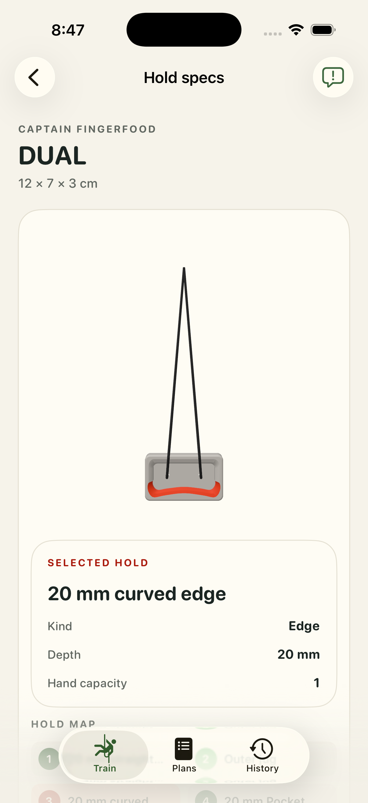
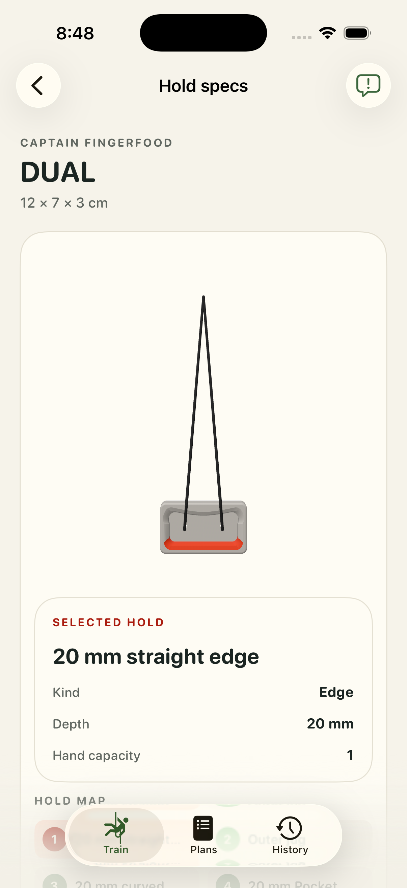
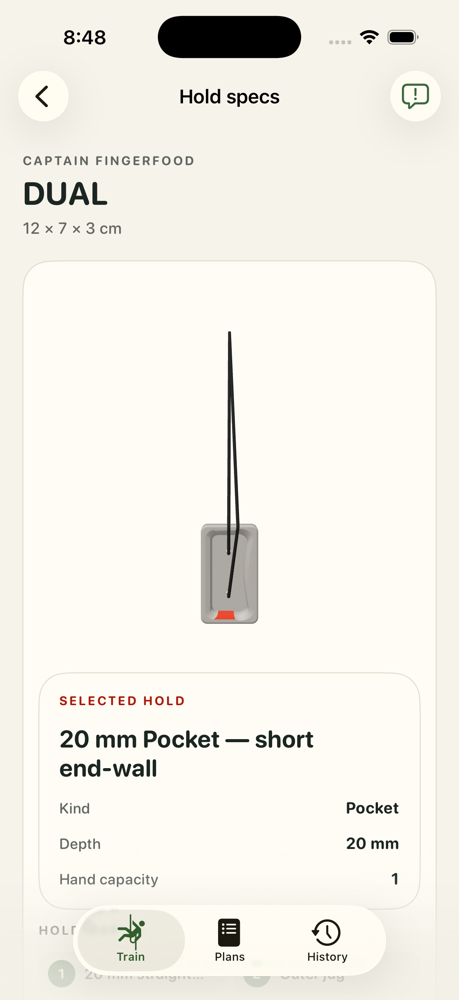
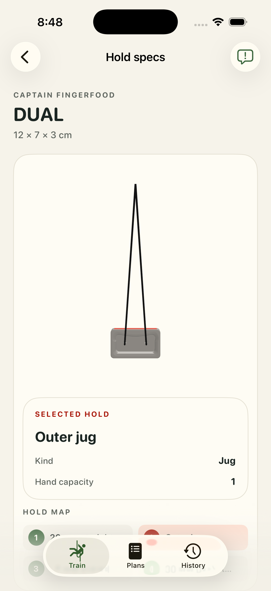

DUAL cord-entry revision, 2026-09-30. Both visible leads approach the front floor openings. All four selected grip poses are captured from the current installed app. Human review is pending.
Front/side/top before-and-after comparisons · Capture provenance · Runtime verification



